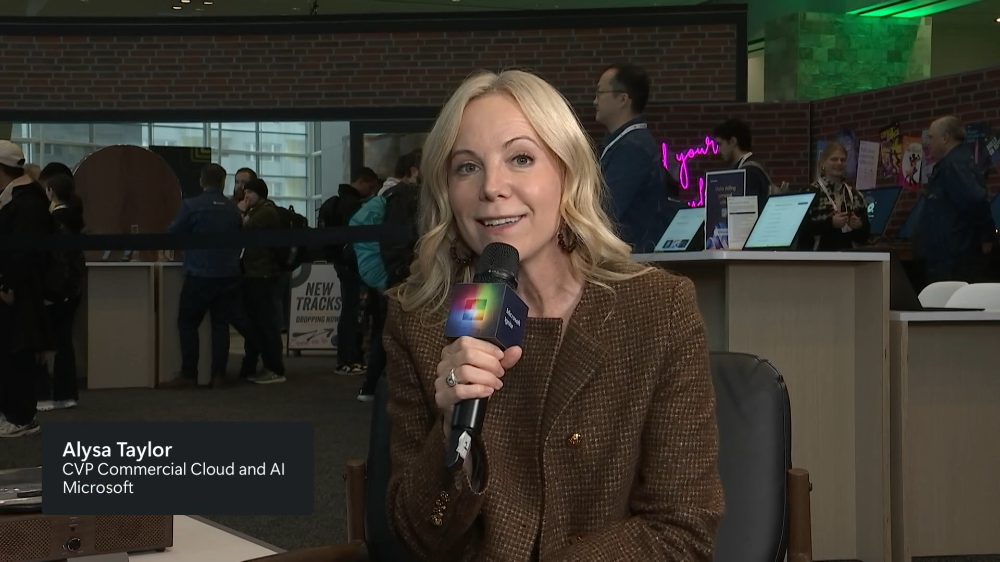
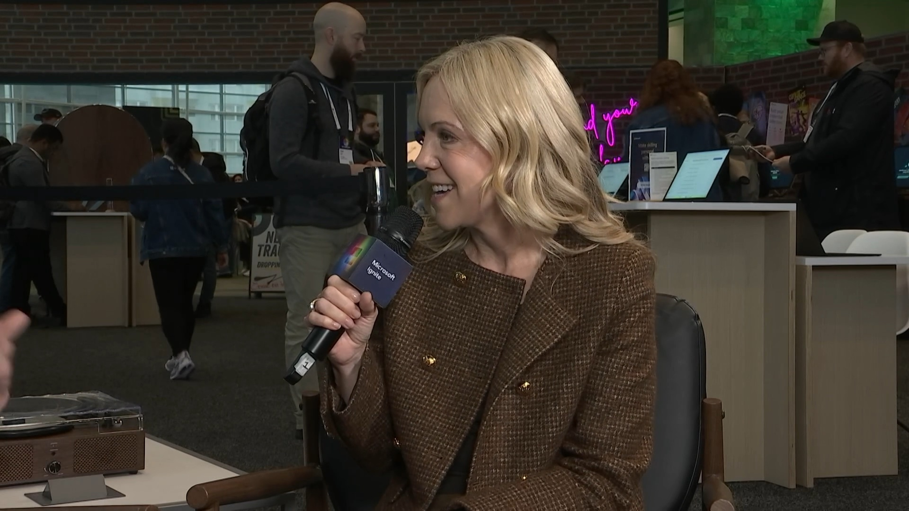
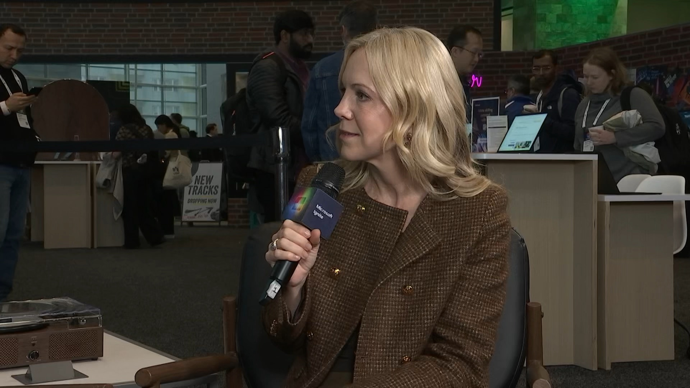

LIVE47 官方实录关键帧 · 00:18
移师技能中心现场：从主动式 Copilot 到全域 Agent 365
Alysa Taylor 与 Charles Lamanna 在展区一线拆解 Today、Workspace 与持续巡航 Autopilot 如何重塑日常协作 [1][2]。
在因天气临时移师 Microsoft Ignite 2026 技能中心（Skills Hub）现场的演播室专场 LIVE47 中，微软商业与行业 Copilot 总裁 Charles Lamanna 与商业云及 AI 首席营销官 Alysa Taylor 展开 12 分 28 秒深度对谈，拆解企业 AI 从“被动辅助（Assisting）”迈向“主动执行（Acting）”的工程底座 [1][2]。围绕 Copilot、Work IQ 与 Agent 365 三大核心支柱，访谈完整披露了跨云商业分析看板、已正式商用的 Entra 智能体身份、假设失陷的零信任“困难模式”纵深隔离、基于开放遥测标准的全链路观测，以及 Charles 钦点的 2027 年最大黑马 Copilot Today 与周日机场救场的个人巡航智能体“Apollo” [1][3]。
01 / Proactive AI & The FinOps Equation
企业应用人工智能的重心正从等待人类输入指令，转向全天候后台自主推进业务 [1]。由于演播中心遭遇天气变化，Alysa Taylor 与 Charles Lamanna 临时转战人声鼎沸的技能中心（Skills Hub）展区完成这场实录对谈；Charles 开篇便点出本届大会最鲜明的风向标——**主动式人工智能（Proactive AI）**不再要求员工字斟句酌地编写提示词或拆解任务，而是直接代劳日常跟进 [1][2]：Copilot 中的 Today 视图主动呈送动态简报并推荐下一步最佳行动，Workspace 提供人类与智能体并肩推进项目的共享空间，而 Autopilot 则在后台持续运转、全天候值守 [1]。
然而当智能体开始在后台持续消耗算力，财务失控的担忧立刻成为企业规模化落地的头号拦路虎 [1][3]。Charles 直言，过去一年客户反映最强烈的采用瓶颈就是“如何看清账单去向、如何设定支出封顶（Spending Caps），以及如何做预算与预测” [1]。为此，微软在 Agent 365 中推出了全新的成本控制策略与 Agent 365 商业分析体验（Business Analytics）——它就像一套横跨微软与非微软生态的全局资源规划或商业智能仪表盘，连 Charles 自己都笑言未曾想到主题演讲现场欢呼声最高的高光时刻竟是一块成本控制看板 [1][3]。
更重要的是，这套分析体系并非单纯为削减开支而设，而是同时计量方程的两端：成本与所创造的业务价值 [1][3]。对于市场营销等日常很少盯着技术账单的知识工作者而言，看板不仅揭示钱花在了哪里，更直接回答投入是否划算——如果一项智能体服务创造了丰厚业务回报，高投入完全合理；反之若毫无产出，哪怕账面花费再低也是纯粹的资源空转 [1]。

Alysa Taylor 与 Charles Lamanna 在展区一线拆解 Today、Workspace 与持续巡航 Autopilot 如何重塑日常协作 [1][2]。

同时打通支出上限、预算预测与业务产出归因，破解企业推进智能体规模化时最棘手的财务黑盒难题 [1][3]。
本场 LIVE47 为 Microsoft Ignite 2026 官方演播室直击访谈（Broadcast Stage，全长 12 分 28 秒，无独立静态幻灯片附件）[1][2]。下方交互导览台集成了微软官方 Medius 点播播放器、高清视频直链与五幕逐秒核校的章节纪要，点击顶部时间轴标签即可按议题脉络定位原话证据 [1][2]：
按时间轴切换主动式 AI 与花费分析、三大支柱统一背板、Entra 零信任困难模式、开放遥测与智能体 Intune、以及 2027 黑马 Today 与 Apollo 救场实录。
02 / One Consistent Backplane
回顾过去一整年自上届大会以来的客户反馈，企业技术负责人提出的最核心诉求只有一条：让不同入口构建和运行的智能体真正无缝协同，彻底消除跨产品间的断崖（Cliffs）与接缝（Seams） [1]。在现实企业架构中，研发团队在 Microsoft Foundry 中编排专业模型，业务专家在 Copilot Studio 中搭建流程智能体，而一线员工则在 Copilot 里启动个人 Autopilot 或在代码库中使用 GitHub Copilot [1]。如果每套工具各自维护孤立的插件目录与管理后台，治理成本将随智能体数量呈指数级失控 [1][3]。
微软将这一整年的架构演进收敛为 Copilot、Work IQ 与 Agent 365 三大支柱，并在底层拉通了一条完全一致的控制背板（One Consistent Backplane）[1][5]：无论智能体诞生于 Foundry、Copilot Studio 还是 Autopilot，管理员都在 Agent 365 中实施同一套策略管控；所有终端共享同一个插件与技能注册表（Plugin Registry），一处上架即可在 GitHub Copilot、Copilot 与 Autopilot 中一致发现和调用；底层数据连接统一交由语义层 IQ 承载，而安全与身份边界则统一锚定在 Microsoft Entra 之上 [1][4]。
03 / Entra Agent ID & Zero Trust "Hard Mode"
当智能体走向多人协同（Multiplayer）与全自主运行，并开始读写核心业务系统与敏感数据时，企业究竟该如何设计访问控制与防失控护栏？Charles Lamanna 给出了两条极具实操价值的工程铁律：第一，访问控制千万不要从零重造轮子；第二，安全防护必须从“完全不信任你自己的智能体”开始 [1][4]。
在身份与权限层面，每家企业早已积累了成熟的访问控制表、应用服务主体（Service Principals）与守护进程权限体系，终端侧也有 Microsoft Intune 保护各类办公设备 [1]。技术浪潮再怎么剧变，权限与访问控制的底层铁律始终未变 [1]。过去一年间，微软已正式商用发布（GA）Microsoft Entra Agent ID 与 Entra Agent User ID——它们并非简单套用旧账号，而是在既有企业身份模型之上专门扩展出适配“数字劳动力延伸”的专属凭证语义，让组织直接沿用熟悉的权限基线来迎接即将到来的“智能体海洋（Sea of Agents）” [1][4]。
而在运行时控制层面，Charles 将智能体防御精准定义为传统企业安全的**“困难模式（Hard Mode）”**——没有哪一道单点开关能独自拦住失控或被劫持的智能体，唯有靠“假设已被入侵（Assume Breach）”的零信任纵深防御层层设卡 [1]：
绝不盲信智能体会按预期方式连接系统，即便模型本身通过安全评测，仍按“已被入侵”标准设计外围护栏，不留任何侥幸赌注 [1]。
为每个智能体分配独立的商用 Entra Agent ID 或 Agent User ID，严格执行最小权限访问控制列表与数据源授权 [1][4]。
实施精细的网络隔离与允许通信的网段范围限制，阻断智能体向未授权外部端点横向渗透或外泄敏感负载 [1]。
将访问下游业务系统的密钥与运行态上下文彻底隔离，防止提示词注入或工具越权读取底层凭据明文 [1]。
将执行环境锁定在标准化安全容器内运行（例如微软新发布的 Windows 端 MXC 容器隔离能力），物理围堵宿主环境风险 [1]。
部署全天候异常行为监测与自动熔断缓解预案，一旦侦测到越权漏洞或安全事件苗头立即介入阻断 [1]。
04 / OpenTelemetry & "Intune for Agents"
打通了身份准入与多层安全控制之后，整套治理栈的最后一块基石便是全域可观测性（Observability）——正如 Charles 在访谈中所言，如果企业手里连一份在役智能体全量清册都没有，根本看不清它们正在干什么，后续一切治理都无从谈起 [1]。听起来略显抽象的“可观测性”，在实际运维中对应着从基础安全清点到深度合规审计的完整证据链：最基础的一层要查清智能体连接了哪些外部系统、调用了哪些工具、所加载的插件与技能究竟来自何处；往上一层则要完整还原促使智能体做出某项决策或执行某个动作的行动轨迹与推理链（Trajectory & Chain of Thought），既满足严格的合规审计要求，也让工程团队能够精准复盘报错与运行故障 [1][3]。
为了避免将客户锁死在单一封闭黑盒中，Agent 365 的可观测底座原生构建在 OpenTelemetry（OTEL） 开放工业标准之上，支持双向数据流转 [1]：一方面提供标准编程接口，将遥测日志直接导出至企业既有的数据湖或安全信息与事件管理平台（SIEM）；另一方面则面向非微软生态全面敞开，允许企业把运行在 Anthropic、亚马逊云（AWS）或谷歌云（GCP） 上的智能体日志同样注入 Agent 365 集中审视 [1]。

Charles 坦言只支持微软自家平台固然轻松，但真实企业注定是碎片化的多供应商格局，因此 Agent 365 必须连接任意运行时 [1]。
Charles 用一个令全场运维与安全架构师耳熟能详的比喻精准锚定了 Agent 365 的战略身位：Microsoft Intune 是现代企业信息化部署中低调却支撑全局的秘密基石（Little Secret Cornerstone），因为它同时管理苹果手机、安卓手机、个人电脑与苹果电脑等任意终端硬件；同理，面对真实企业必然存在的多模型、多云异构智能体格局，Agent 365 就是要成为统管任意智能体平台与运行时的“智能体版 Intune” [1][3]。
05 / 2027 Dark Horse: Copilot Today & Apollo
在访谈压轴环节，Alysa Taylor 请整日提前试用内部前沿构建版本的 Charles Lamanna 预测未来一年最令他兴奋的能力——Charles 毫不犹豫地将 Copilot Today 点名为 2027 年 Copilot 家族最具爆发力的黑马（Sleeper Pick / Dark Horse） [1]。以往员工打开对话界面时，往往并不清楚系统后台究竟掌握了多少上下文，还得费心构思提示词去提问；而 Copilot Today 直接接入 Work IQ 的工作语义图谱与组织人脉图谱（Work Graph & People Graph），完全免去手动提问步骤，一打开就以极易消化的信息流呈现当下最要紧的事项 [1][5]：
Charles 每天打开 Copilot Today 即获精准待办流：若首席执行官 Satya Nadella 或首席财务官 Amy Hood 发来询问会自动置顶，更能无需提示词直接列出本周正在推进的 5 件核心工作及背景要点 [1]。
Alysa 分享同款惊喜体验：Today 主动提醒她就手头项目去找同事 Kyle 对齐，切中原本极易遗漏的协作节点；Charles 预判未来一年 Today 将成为人们发起协同任务（Cowork Tasks）的首选主入口 [1]。
Charles 给自己的专属 Autopilot 起名“Apollo”。就在大会前一个周日，因航班突发改签调整，Apollo 在未经任何指令询问的情况下自主巡检行程，及时预警专车正开往错误机场，帮他躲过误机危机 [1]。
| 核心演进维度 | 传统被动辅助与割裂治理态 | LIVE47 主动执行与全域治理态 | 访谈实录关键锚点 |
|---|---|---|---|
| 人机交互范式 | 面对空白输入框反复构思提示词，人工跟进日程与跨人协作盲区 [1] | Work IQ 驱动 Copilot Today 免提示词推送每周 5 件要事，Autopilot 后台持续巡航 [1][5] | 置顶紧急高层诉求、提醒对接同事 Kyle、周日自动纠偏错误机场专车 [1] |
| 平台架构连接 | Foundry、Copilot Studio 与 GitHub 各自维护独立后台与技能目录，存在产品断崖 [1] | Copilot + Work IQ + Agent 365 共用统一背板与单一插件注册表 [1] | 消除跨产品断崖与接缝，跨 GitHub Copilot、Copilot 与 Autopilot 一致复用技能 [1] |
| 身份与运行时安全 | 为智能体另建孤立鉴权，或轻信模型自觉遵守边界而缺乏底层物理隔离 [1] | 扩展商用 Entra Agent ID，按零信任“困难模式”叠加网络、密钥与容器隔离 [1][4] | 假设已被入侵，启用 ACL、IP 限制、密钥隔离及 Windows 端 MXC 容器 [1] |
| 观测与财务治理 | 缺乏在役智能体清册，账单黑盒无法设限，且三方云运行态游离于监管之外 [1] | Agent 365 商业分析核算支出与价值，基于 OTEL 打造“智能体版 Intune” [1][3] | 双向打通数据湖与 SIEM，原生注入 Anthropic、AWS、GCP 日志统管全生态 [1] |
对谈尾声，Alysa Taylor 引用稍早前与微软人工智能首席执行官 Mustafa Suleyman 交流的“人文主义人工智能（Humanistic AI）”理念收束全场：当免提示词主动贴心服务的 Copilot Today、全天候排忧解难的 Autopilot，与更高性能、更具成本效益的模型以及 Agent 365 的零信任治理底座交汇在一起时，企业不仅能放心把关键工作交给智能体去行动，更真正把从繁琐摩擦中解放出来的从容与愉悦还给了每一位职场人 [1]。
06 / References: Official Primary Sources & Companion Sessions
https://medius.microsoft.com/video/asset/HIGHMP4/aa0d0210-ddd6-4397-8802-bcf011c02676）